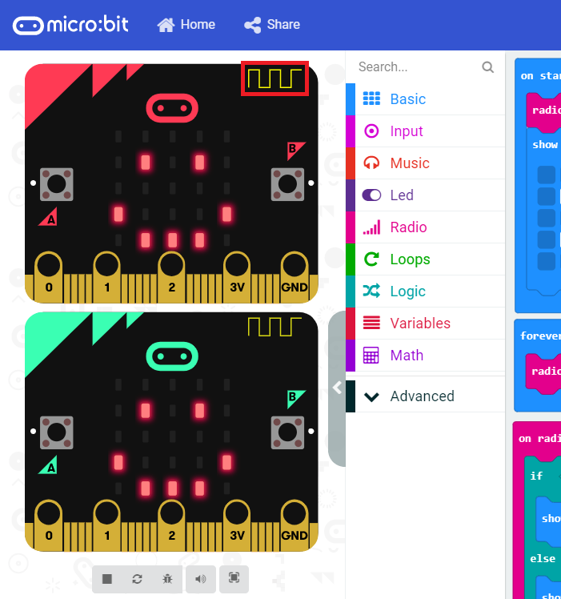

마이크로빗이란?
마이크로빗이란?
마이크로빗은 프로그래밍 마이크로컨트롤러입니다! JavaScript, Python, Scratch, Blocks와 같은 다양한 언어를 사용하여 웹 브라우저에서 코딩할 수 있습니다. 이번 세션에서는 MakeCode Blocks를 사용합니다.
마이크로빗에는 다음과 같이 다양한 동작이 가능한 기능과 센서가 포함되어 있습니다:
- 25개의 개별적으로 제어 가능한 LED
- 2개의 물리적 버튼
- 2개의 입력/출력(IO) 핀
- 자력계 센서
- 가속도계(모션 센서)
- 블루투스

마이크로빗의 개별 구성 요소와 기능에 대해 모두 알고 싶다면 여기 에서 확인할 수 있습니다.
이제 가방에서 마이크로빗과 나머지 구성품을 꺼내 보세요. 마이크로빗 1개, 배터리 2개, 마이크로 USB 케이블, 그리고 배터리 홀더(빨간색과 검은색 와이어가 나오는 검은색 박스)가 있어야 합니다. 빠진 것이 있거나 도움이 필요하면 강사 중 한 명에게 요청하세요!
시뮬레이터 사용
실제 하드웨어를 사용하는 것만큼 재미있지는 않지만, 시뮬레이터를 사용해 코드가 작동하는 것을 확인할 수 있습니다. 화면 왼쪽에서 마이크로빗 이미지들을 찾아보세요. 보이지 않는 경우, 왼쪽에 있는 “>” 기호를 클릭하여 시뮬레이터를 표시하세요. 시뮬레이터의 마이크로빗에서 블루투스 라디오 안테나를 찾아보세요. 노란색의 사각형 파형 모양입니다.
안테나 위에 마우스 커서를 올리면 실제 신호 강도가 표시됩니다. 그런 다음 안테나를 클릭하고 마우스 커서를 왼쪽으로 드래그하여 신호 강도를 줄이거나, 오른쪽으로 드래그하여 강도를 높일 수 있습니다. 신호가 일정 강도를 넘으면 (강도 > -67), 다른 마이크로빗이 찡그린 표정을 짓습니다. 신호를 다시 약하게 하면 마이크로빗이 웃는 얼굴로 바뀝니다.

자, 이제 코딩을 시작해 봅시다!